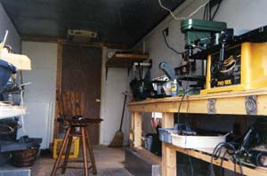

Faced with the need for a workshop, but knowing that we would be moving soon, I was reluctant to build a new structure on our property. Then, one day while running an errand in town, I noticed a delivery van at a local business, and a light went on!
The used delivery van I purchased was owned by a local delivery company that was downsizing, so I got it for a reasonable price. It was already wired for 110 volts and the inside was roughly finished with an insulated roof air conditioner. All that was left for me to do was add a workbench and overhead fluorescent lights. I also put in a small refrigerator that had been gathering dust in a storage shed.
Suddenly, I had not only a mobile workshop for my own use, but I also could use it for a mobile fix-it business.
In choosing a van for your mobile workshop, think about how much it will be driven. One that will just be moved around your property doesn’t have to be as pricey as a van that you want to take daily on the road. Good places to look for used vans are bakery and produce companies and delivery services such as FedEx or UPS.
You can tailor the inside of your mobile workshop to fit your business needs - blacksmith, ferrier, plumber, electrician, hairdresser or general fix-it shop. With a small generator mounted to the back of the van you can even provide your own power in remote locations.
|
 RUSSELL VINCENT This workshop on wheels was made by converting a used delivery truck.
|
|
|